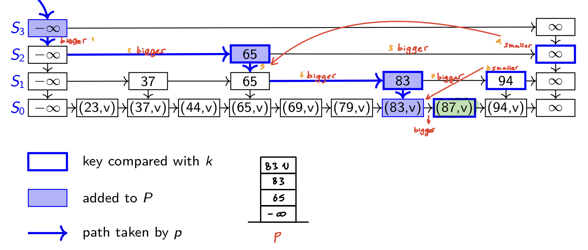
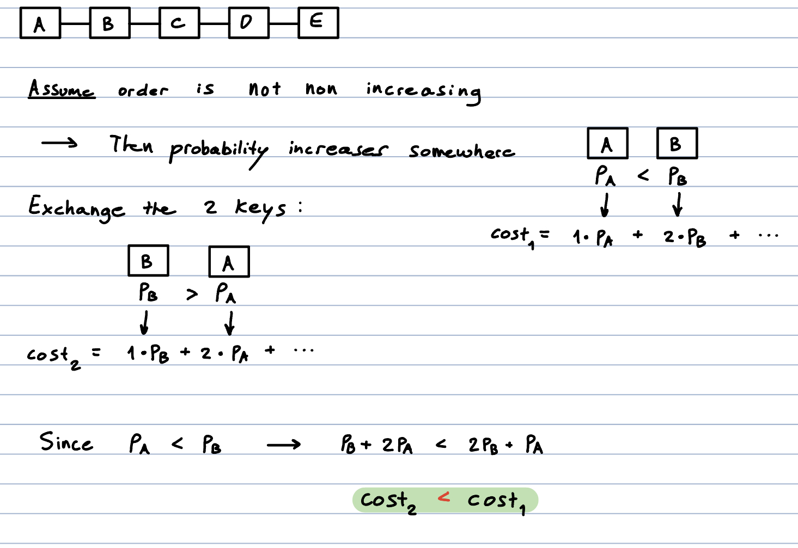

M5
Skip List
Dictionary Implementation
Order list ( search) but we can skip to items ( search)
Structure
Nodes: KVPs + next & below (references)
is a list with sentinels on either end
- : dictionary in an ordered list
- : only sentinels

Height: # levels - 1
Tower: of nodes with same key
- height = # levels above 1st
insert
Idea
- search(k), insert after
- Tower Height ← # heads before tails
- Add top (sentinel) level if needed
EX

search
Idea
-
- go to next, otherwise go to below
- check
Code

search(k)P←getPredecessors(k)p ←
P.topif(p.after.key == k)
return p.after
else
return … //would be after
getPredecessors(k)p ← root
P← stack (add p)while p.below exists
p ← p.below
while p.after.key <
kp ← p.after
P.push(p)return
P
EX

{kind=link}
delete
Idea
-
- delete and it’s tower
- Fix height
EX 1

EX 2

Analysis
Operation’s Run-Time depends on getPredecessors
- depends on
- Worst Case: no bound (not likely)
- Expected:
Biased Search Request
❗
Expected Cost of Search
Biased Search Methods:
- We know distribution before hand → Optimal Static Ordering
- Order Items are ordered by access-probability
- Has lowest expected cost for search
Proof
Key:
if it’s not non-increasing → you can make the cost less
→ You can’t make cost less → it’s non increasing

EX


- Order Items are ordered by access-probability
{kind=link}
- We don’t know → Dynamic Ordering
Make popular items more accessible. When searched for:
- Move to Front, or
- Transpose (swap with proceeding item)
❗cost(MTF) < 2 cost(Optimal Static Ordering)